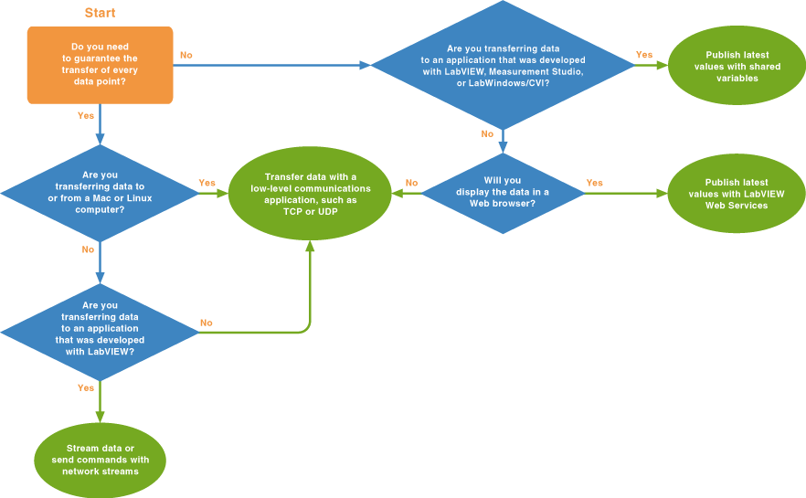

When choosing networking features for your applications, the most important factors are the communication models that your applications use. Different communication models have different data transfer requirements that different networking features are designed to fulfill. The following table describes the most common communication models and recommends a networking feature for each.
| Communication Model | Description | Example | Recommended Networking Feature |
|---|---|---|---|
| Process data | The transfer of latest values only, typically from one or more targets to a host computer. | An application in which an embedded controller acquires temperature data and periodically transfers a data point to the host computer so users can monitor the state of the system. | Shared variables |
| Streaming | The high-throughput transfer of every data point, typically from one computer that writes data to another computer that reads and displays or processes that data. | An application in which an embedded controller acquires vibration data from a motor and streams every point of that data to a host computer for analysis and processing. | Network streams* |
| Command-based | Low-latency data transfer from one computer, known as the commander, that triggers a specific event on another computer, the worker. Command-based communication is typically infrequent and requires that you do not miss any data points. | When a user clicks the stop button in a human-machine interface (HMI) application, that application shuts down a conveyer belt by sending the stop command to the CompactRIO target controlling the conveyer belt. | Network streams* |
* Available only for Windows and Real-Time systems.
Depending on the OSes your computers run and the applications you are transferring data to, you might need to use networking features other than those outlined in the table above. Use the following flowchart to determine the networking features that best fit your application needs.

You also can use the following networking features with LabVIEW:
|
Note��If your application automatically loads on system startup, as is typical for real-time applications, your application may start before the network is fully configured. Network connections may fail until the system can route connection requests to a network interface. Consider using the Wait for Configured Network VI to delay automatic network connection requests until the system can route requests. |